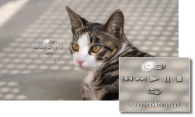

Kuvat > Kuvien tarkasteleminen kuvaesityksenä
Kuvien tarkasteleminen kuvaesityksenä
Jokainen kuva näytetään automaattisesti oikeassa järjestyksessä. Kuvaesitys alkaa, kun valitset kuvat sisältävän kansion tai tallennusvälineen kuvakkeen ja painat START-näppäintä.
Vihjeitä
- Kuvaesityksen voi myös aloittaa ohjauspaneelista tai kuvan asetusvalikosta.
- Jos kuvaesitystä ei voi aloittaa painamalla START-näppäintä, aloita kuvaesitys ohjauspaneelista.
Kuvaesityksen ohjauspaneelin käyttäminen
Kun painat  -näppäintä kuvaesityksen aikana, ohjauspaneeli avautuu.
-näppäintä kuvaesityksen aikana, ohjauspaneeli avautuu.

 |
Kuvaesityksen tyyli | Valitse jokin viidestä kuvaesitystyypistä. |
|---|---|---|
 |
Kuvaesityksen nopeus | Valitse jokin kolmesta kuvaesityksen nopeudesta: [Nopea] > [Normaali] > [Hidas]. |
 |
Edellinen | Siirry edelliseen kuvaan. |
 |
Seuraava | Siirry seuraavaan kuvaan. |
 |
Toista | Aloita kuvaesitys. |
 |
Tauko | Keskeytä kuvaesitys. |
 |
Stop | Pysäytä kuvaesitys. |
 |
Kertaus | Toista kuvaesitys aina uudelleen, kun se päättyy. |
Vihje
Kun (Kuvaesityksen tyyli) -asetukseksi on valittu [Kuva-albumi] tai [Kuva-albumi 2], voit käyttää langattoman SIXAXIS™-ohjaimen oikeaa sauvaa suurentamiseen tai pienentämiseen tai kuvaesityksen nopeuden säätämiseen.
Kuvaesityksen näyttäminen musiikkia toistettaessa
Voit näyttää kuvaesityksen ja toistaa musiikkia samaan aikaan.
1. |
Aloita musiikin toisto kohdassa |
|---|---|
2. |
Paina PS-näppäintä. |
3. |
Valitse |
 (Musiikki).
(Musiikki). (Kuvat), valitse kuvat tai kansio, jota haluat tarkastella kuvaesityksessä ja paina sitten START-näppäintä.
(Kuvat), valitse kuvat tai kansio, jota haluat tarkastella kuvaesityksessä ja paina sitten START-näppäintä.Vihjeitä
- Jos painat PS-näppäintä samanaikaisen toiston aikana, XMB™-valikko tulee näkyviin ja voit vaihtaa musiikkia tai kuvia.
- Kun haluat lopettaa, sinun on lopetettava kuvaesitys ja musiikki erikseen. Kun olet pysäyttänyt jommankumman, valitse toistettavana oleva raita tai kuva ja lopeta sen toisto.
- Et voi toistaa Super Audio CD -levyä samaan aikaan kuvaesityksen kanssa.
- Jos
 (Asetukset) >
(Asetukset) >  (Musiikkiasetukset) > [Ulostulotaajuus] -asetukseksi määritetään [44,1 / 88,2 / 176,4 kHz], musiikkia ei voi toistaa kuvaesityksen aikana.
(Musiikkiasetukset) > [Ulostulotaajuus] -asetukseksi määritetään [44,1 / 88,2 / 176,4 kHz], musiikkia ei voi toistaa kuvaesityksen aikana.
Huomautus
Super Audio CD -levyjä ei voi toistaa joissakin PS3™-järjestelmissä. Lisätietoja on kohdassa [Toistettavat levytyypit].